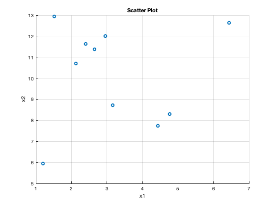
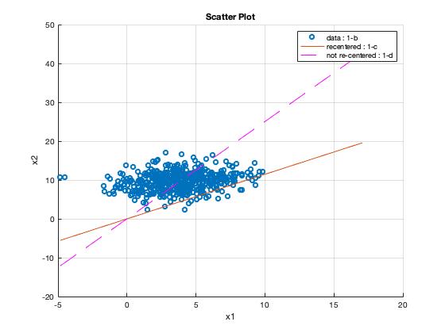
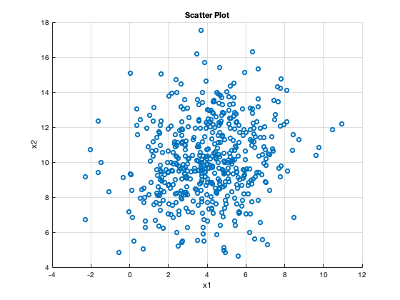

disp('1a)')
mu = [4 ;10];
W = [1; 1];
sigma_sq = 4;
zi = 0;
M = 10;
X = mvnrnd(W*zi+mu, sigma_sq*eye(2), M);
figure(1);
scatter(X(:,1), X(:,2));
xlabel('x1');
ylabel('x2');
title('Scatter Plot');
grid on
snapnow;
disp('1b)')
N = 50;
z = normrnd(0, 1, [N,1]);
X = [];
for i=1:N
mu = [4 ;10];
W = [1; 1];
sigma_sq = 4;
zi = z(i);
M = 10;
X = [X; mvnrnd(W*zi+mu, sigma_sq*eye(2), M)];
end
figure(2);
scatter(X(:,1), X(:,2));
grid on
xlabel('x1');
ylabel('x2');
title('Scatter Plot');
disp('1c)')
X_new= X - mean(X);
n = size(X_new,1);
S = 1/n * (X_new' * X_new);
[V, ~] = eigs(S, 1);
hold on
tx = [min(X(:,1)) max(X(:,2))];
ty = V(2)*tx/V(1);
plot(tx, ty);
grid on
disp('1d)')
n = size(X,1);
S = 1/n * (X' * X);
[V, ~] = eigs(S, 1);
tx = [min(X(:,1)) max(X(:,2))];
ty = V(2)*tx/V(1);
plot(tx, ty, '--m');
legend('data : 1-b', 'recentered : 1-c', 'not re-centered : 1-d')
snapnow;
disp(" The variance is not captured properly if data is not re-centered.")
disp('1e)')
mu = [4 ;10];
W = [1; 1];
sigma_sq = 4;
N = 500;
X = zeros(N,2);
for i=1:N
zi = normrnd(0, 1);
X(i,:)=mvnrnd(W*zi+mu, sigma_sq*eye(2));
end
figure(5);
scatter(X(:,1), X(:,2));
grid on
xlabel('x1');
ylabel('x2');
title('Scatter Plot');
snapnow;
disp("In PPCA, we generate zi and then generate Xi - repeat this 500 times. This is different from 1d, where");
disp("zi is randomly generated 50 times and then used to generate Xi. Here zi's are randomly picked 500 times.");
1a)

1b)
1c)
1d)

The variance is not captured properly if data is not re-centered.
1e)

In PPCA, we generate zi and then generate Xi - repeat this 500 times. This is different from 1d, where
zi is randomly generated 50 times and then used to generate Xi. Here zi's are randomly picked 500 times.